생산자동화산업기사 (2002-03-10 기출문제)
1과목: 기계가공법 및 안전관리
1. 교차되는 두 직선의 교차 부분을 rounding하려고 할 때 사용되는 것은?
- chamfer
- fillet
- ellipse
- mirror
(정답률: 67%)

2. 다음중 주축기능에 사용되는 주소는?
- F
- S
- T
- C
(정답률: 50%)
3. 스패너(spanner)를 단조하는데 보통 많이 사용되는 단조방식은 다음 중 어느 것인가?
- 형(型)단조
- 자유(自由)단조
- 업셋(upset)단조
- 회전스웨이징(回轉 swaging)
(정답률: 64%)
4. 머시닝센터의 일상적인 점검사항이 아닌 것은?
- 기계부의 정상적인 작동 점검
- 유압이 기준치인지 여부 점검
- 조작판상의 키 작동 정상여부
- 이송축의 백래시 등 정도검사
(정답률: 69%)
5. 점(1,2)를 2차원적으로 원점을 기준으로 반시계방향으로 30° 회전시킨 후의 좌표값은?
- ( √3 /2-1, 1/2+√ 3 )
- ( √3 /2, 1/2- √3 )
- ( √3 /2+1, 1/2+ √3 )
- ( √3 -1, 2- √3 )
(정답률: 42%)
6. 다음 중 솔리드 모델의 단점이 아닌 것은?
- 컴퓨터의 메모리를 많이 필요로 한다.
- 데이터 구조가 복잡하다.
- 해석용 모델로 사용하지 못한다.
- 데이터 처리에 시간이 많이 소요된다.
(정답률: 59%)
7. 아베(Abbe)의 원리에 맞는 구조를 가진 것은?
- 하이트 게이지
- 외측 마이크로미터
- 블록 게이지
- 버니어 캘리퍼스
(정답률: 50%)
8. 방전가공에 대한 설명 중 틀린 것은?
- 단발 방전시간이 크면 가공속도가 빨라진다.
- 단발 방전에너지가 많으면 가공면이 거칠다.
- 휴지시간(OFF TIME)이 길면 가공속도가 빨라진다.
- 단발 방전에너지가 많으면 가공 속도가 빨라진다.
(정답률: 81%)
9. 파이프끼리 서로 맞대기 용접을 하는데 가장 좋은 용접 결과를 얻을 수 있는 것은?
- 가스 압접
- 플래시버트 용접(flash butt welding)
- 고주파 유도 용접
- 초음파 용접
(정답률: 48%)
10. 주물사의 필요조건이 아닌것은?
- 내화성이 크고, 화학적 변화가 없을 것
- 단단한 강도를 가지며, 쉽게 파손 될 것
- 주형제작이 용이하고, 통기성이 좋을 것
- 가격이 싸고 구입이 쉬울 것
(정답률: 84%)
11. 소성 가공에서 바우싱거 효과(Bauschinger effect)란 무엇인가?
- 금속 재료가 먼저 받은 것과 반대 방향의 변형에 대하여는 탄성 한도나 항복점이 저하되는 현상이다.
- 금속 재료에서 한번 어떤 방향으로 소성 변형을 받으면 같은 방향으로 소성 변형을 일으키는데 대하여 저항력이 증대하여 간다는 현상이다.
- 시간과 더불어 변율이 커져가는 현상이다.
- 외력을 제거한 후 시간의 경과에 따라 잔류 변형이 감소하는 현상이다.
(정답률: 42%)
12. 버니어 캘리퍼스(Vernier Calipers)의 어미자에 새겨진 0.5㎜의 24눈금(12㎜)으로 아들자를 25등분 할 때, 어미자와 아들자의 1눈금의 차는 얼마인가?
- 1/20 mm
- 1/24 mm
- 1/50 mm
- 1/25 mm
(정답률: 43%)
13. 다음의 프로그램에서 P1점에 바이트가 도달했을 때 주축의 회전수는 얼마인가? (단, G50 S1500; G96 S150;)
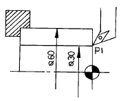
- 1500rpm
- 1592rpm
- 2000rpm
- 5000rpm
(정답률: 58%)
14. 연삭가공에서 숫돌입자의 연삭깊이는 어떻게 되는가?
- 숫돌의 원주속도에 비례한다.
- 연삭입자의 간격(間隔)에 반비례한다.
- 숫돌의 원주속도에 반비례한다.
- 공작물의 원주속도에 반비례한다.
(정답률: 46%)
15. 강재의 표면경화방법 중에서 암모니아 가스를 이용하는 것은?
- 화염 열처리
- 고주파 열처리
- 염욕로 침탄법
- 질화법
(정답률: 63%)
16. 2차원 CAD시스템에서 원을 정의하는 방법 중 틀린 것은?
- 중심점과 반지름 지정에 의한 정의
- 두 점에 의한 정의
- 원주상에 세 점에 의한 정의
- 3개의 선에 접하는 요소에 의한 정의
(정답률: 50%)
17. 절삭가공시 빌트 업 에지(built-up edge)의 옳은 의미는?
- 공구의 선단에 초경합금 팁을 설치하는 것을 말한다.
- 공구의 선단에 칩이 미세한 입자가 부착하는 것을 말한다.
- 공구의 선단에 칩 브레이커를 설치하는 것을 말한다.
- 공구의 선단을 뾰족하게 돌출시킨 것을 말한다.
(정답률: 45%)
18. DNC(Direct Numerical Control)운전시 사용되는 통신 케이블(RS232C) 25핀 중에서 수신을 나타내는 핀은?
- 2
- 3
- 6
- 7
(정답률: 44%)
19. 브로칭 머신에서 가공할 수 있는 것은?
- 치차를 절삭가공한다.
- 대형 차륜을 절삭가공한다.
- 나사를 절삭가공한다.
- 복잡한 형상의 구멍이나 홈을 절삭가공한다.
(정답률: 72%)
20. 자기테이프의 기록밀도를 나타내는 단위로 맞는 것은?
- BPI
- IPS
- IRG
- EDP
(정답률: 39%)
2과목: 기계제도 및 기초공학
21. 두개의 기어가 서로 맞물려서 운동을 전달하고 있다. 회전 방향이 같고 감속비가 큰 기어는 어느 것인가?
- 헬리컬 기어
- 웜기어
- 내접기어
- 하이포이드 기어
(정답률: 42%)
22. 풀리장치에서 벨트의 장력이 너무 크게 되면 어떤 현상이 일어나는가?
- 미끄럼이 크게 된다.
- 전동이 불확실하게 된다.
- 베어링의 마찰손실이 크게 된다.
- 회전력이 감소 된다.
(정답률: 64%)
23. 풀림을 하는 목적을 설명한 것 중 틀린 사항은?
- 점성을 제거
- 가공 중 응력제거
- 가공 후 변형제거
- 재료 내부에 생긴 응력제거
(정답률: 53%)
24. 염기성 전로에 사용되는 내화벽돌 재료는 어느 것인가?
- 샤모트 벽돌
- 규석 벽돌
- 고알루미나 벽돌
- 마그네시아 벽돌
(정답률: 40%)
25. 비철계 초소성 재료 중 최대의 연신을 갖는 합금은?
- Ag합금
- Co합금
- Bi합금
- Cd합금
(정답률: 42%)
26. 그림과 같은 용접이음에서 용접부에 발생하는 인장응력은 얼마인가?
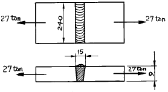
- 7.5㎏f/㎜2
- 12.5㎏f/㎜2
- 18.8㎏f/㎜2
- 25.6㎏f/㎜2
(정답률: 34%)
27. 기중기 등에서 물체를 내릴 때 하중 자신에 의하여 브레이크 작용을 행하여 속도를 억제하는 것은?
- 블록 브레이크
- 밴드 브레이크
- 자동 하중 브레이크
- 축압 브레이크
(정답률: 90%)
28. 다음 중 고속도강과 가장 관계가 먼 사항은?
- W-Cr-V(18-4-1)계가 대표적이다
- 500-600℃로 뜨임하면 급격히 연화(軟化)된다.
- W계와 Mo계 두가지로 크게 나뉜다.
- 각종 공구용으로 이용된다.
(정답률: 68%)
29. 묻힘키이(sunk key)에서 생기는 전단응력을 τ , 키이에 생기는 압축응력을 σc라 하여 τ /σc = 1/2일때 키의 폭 b와 높이 h와의 관계를 가장 옳게 설명한 것은?
- 폭이 높이 보다 크다.
- 폭이 높이 보다 작다.
- 폭과 높이가 같다.
- 폭과 높이는 반비례 한다.
(정답률: 37%)
30. 펄라이트(Pearlite)의 생성되는 과정에서 틀린 것은?
- Fe3C의 핵이 성장한다.
- α 가 생긴 입자에 Fe3C가 생긴다.
- γ의 결정립계에 Fe3C의 핵이 생긴다.
- Fe3C의 주위에 γ 가 생긴다.
(정답률: 42%)
31. 그림과 같은 스프링 장치에서 각 스프링의 상수 K1=4㎏f/㎝, K2=5 ㎏f/㎝, K3=6 ㎏f/㎝이며 하중 방향의 처짐 δ =150㎜일 때, 하중 P는 얼마인가?
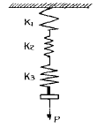
- P = 251㎏f
- P = 225㎏f
- P = 31.4㎏f
- P = 24.3㎏f
(정답률: 29%)
32. 탄소강은 일반적으로 200∼300℃ 부근에서 상온보다 더욱 취약한 성질을 갖는다. 이것을 무엇이라 하는가?
- 저온취성
- 청열취성
- 고온취성
- 적열취성
(정답률: 34%)
33. 반복 하중을 가하여 재료의 강도를 평가하는 시험 방법은 다음 중 어느 것인가?
- 충격시험
- 인장시험
- 굽힘시험
- 피로시험
(정답률: 48%)
34. 원뿔면 또는 원통면 밸브시트 안에서 밸브가 회전하고 유체가 그 회전축에 직각으로 유동하는 구조로 된 밸브는?
- 리프트밸브
- 슬라이딩밸브
- 회전밸브
- 버터플라이밸브
(정답률: 58%)
35. 철의 동소체로서 A3 변태에서 A4 변태 사이에 있는 철은?
- α -Fe
- β -Fe
- γ -Fe
- δ -Fe
(정답률: 37%)
36. 다음 축이음 중 두축이 서로 평행하고 거리가 짧고 교차하지 않는 경우에 사용하는 기계요소는?
- 플랜지 커플링
- 맞물림 클러치
- 올덤 커플링
- 유니버설 조인트
(정답률: 34%)
37. 400rpm으로 전동축을 지지하고 있는 미끄럼 베어링에서 저어널의 지름 d =6㎝, 저어널의 길이 ℓ =10㎝이고, W=420㎏f의 레디얼 하중이 작용할 때, 베어링 압력은?
- 0.⑤㎏f/㎜2
- 0.06㎏f/㎜2
- 0.07㎏f/㎜2
- 0.08㎏f/㎜2
(정답률: 52%)
38. 유니파이나사의 나사산 각도는?
- 55°
- 60°
- 30°
- 50°
(정답률: 40%)
39. 다음 중 불변강이 아닌것은?
- 인바
- 엘린바
- 인코넬
- 슈퍼인바
(정답률: 48%)
40. 보통주철은 주조한 그대로 사용되는 일이 많으나 최근에는 각종 열처리를 실시하여 재료의 성질을 개선한다. 다음 중 관계과 가장 먼 것은?
- 전연성 향상
- 피로강도 향상
- 내마모성 향상
- 피삭성 및 치수안정성 향상
(정답률: 34%)
3과목: 자동제어
41. PLC(Programmable Logic Controller)는 생산현장에 설치되어 기계장치를 제어하는데 매우 유용하게 이용되고 있다. 이 PLC의 주요 구성요소로 적합하지 않은 것은?
- 전원부
- CPU
- 입출력부(I/O interface)
- 전자개폐기
(정답률: 64%)
42. 근궤적에 관한 설명이다. 옳지 않은 것은?
- 근궤적상 K=0인 점은 G(s)· H(s)의 극점이다.
- 근궤적은 실수축에 관하여 대칭이다.
- 완전 근궤적은 실수축의 어느 구간에서 그 구간 우측에 있는 G(s)· H(s)의 극점, 영점의 총수가 짝수인 경우 그 구간에서 그려진다.
- 근궤적은 G(s)· H(s)의 극점에서 출발하여 영점으로 도착한다.
(정답률: 53%)
43. 다음 중 압력제어밸브는 어느 것인가?
- 릴리프 밸브
- 셔틀 밸브
- 체크 밸브
- 2압 밸브
(정답률: 67%)
44. 다음 유압회로의 명칭으로 적합한 것은?
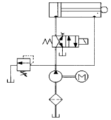
- 무부하회로
- 미터인회로
- 동조회로
- 차동회로
(정답률: 36%)
45. 실린더의 지지방식이 아닌 것은?
- 플랜지 형
- 클래비스 형
- 트러니언 형
- 핸드 형
(정답률: 44%)
46. 다음 중 회로도의 표현 방식은 어느 것인가?
- 횡서
- 중서
- 장서
- 황서
(정답률: 66%)
47. 입력이 어떤 정상 상태에서 다른 상태로 변화했을 때, 출력이 정상 상태에 도달할 때까지의 응답은?
- 과도 응답
- 스텝 응답
- 램프 응답
- 임펄스 응답
(정답률: 59%)
48. 그림과 같은 회로의 논리식은?
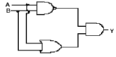
- A +
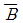
 A + B
A + B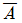
B + A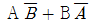
(정답률: 52%)
49. 다음 PLC 관련용어의 설명 중에 틀린 것은?
- 스캔타임(Scan Time)은 CPU가 RUN중 프로그램처리와 통신처리, 입출력 처리등을 1회 수행하는데 걸리는 시간이다.
- 워드(Word)는 8bit 구성되어 있고, 범위는 0-255까지이다.
- 에지(Edge)는 펄스의 상승/하강 시점을 뜻한다.
- 업 로우딩(Up loading)은 PLC 메모리에 내장된 프로그램을 프로그램 편집기로 읽어오는 것이다.
(정답률: 30%)
50. F(t)=e-1[1/(s2+6s+10)]의 값은?
- e-3t cosωt
- e-3t sint
- e-t sin5t
- e-t sin5ωt
(정답률: 63%)
51. 펌프의 토출량이 15〔ℓ /min〕이고 유압 실린더에서의 피스톤 직경이 32〔㎜], 배관경이 6〔㎜〕일 때 배관에서의 유속과 피스톤의 전진 속도를 구하시오.
- 배관에서의 유속 : 5.31〔m/sec〕, 피스톤 전진속도 : 1.87〔m/sec〕
- 배관에서의 유속 : 8.84〔m/sec〕, 피스톤 전진속도 : 0.31〔m/sec〕
- 배관에서의 유속 : 53.1〔m/sec〕, 피스톤 전진속도 : 18.7〔m/sec〕
- 배관에서의 유속 : 0.88〔m/sec〕, 피스톤 전진속도 : 0.03〔m/sec〕
(정답률: 47%)
52. 다음 그림과 같은 회로에서 V(s)을 구하시오.
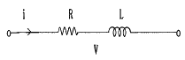
- V(s) = RI(s) + sLI(s)
- V(s) = (1/R)I(s) + sLI(s)
- V(s) = RI(s) + (1/sL)I(s)
- V(s) = RI(s) + (1/L)I(s)
(정답률: 57%)
53. 다음 중 한방향의 유동은 허용하나 역방향의 유동은 완전히 저지하는 밸브는?
- 체크밸브
- 교축밸브
- 릴리프밸브
- 감압밸브
(정답률: 64%)
54. 강관에 의한 배관시 주의사항으로 옳지 않은 것은?
- 나사 전용기로 정확한 나사 가공 후 내부 청소를 깨끗이 한다.
- 실링 테이프는 1∼2 산 정도 남기고 감는다.
- 원터치 니들 사용시에 누설이 없도록 충분히 끼워 넣는다.
- 액체 실을 사용할 경우 암나사 부에는 바르지 않는다
(정답률: 31%)
55. 컴퓨터와 외부장치 간의 디지털 정보 입.출력시에 출력소자로 이용되는 것이 아닌 것은?
- 릴레이
- 발광다이오드
- 스테핑모터
- 근접스위치
(정답률: 67%)
56. 다음 기호는 공기압 조정유닛이다. 이 유닛에 포함된 기기의 나열이 옳은 것은?
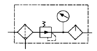
- 압력계, 루브리케이터, 에어 드라이어, 레귤레이터
- 압력계, 루브리케이터, 필터, 레귤레이터
- 압력계, 루브리케이터, 드레인 배출기, 레귤레이터
- 압력계, 루브리케이터, 드레인 배출기 붙이 필터, 레귤레이터
(정답률: 38%)
57. PLC에는 기본적으로 여러 유니트를 조합하여 설치한다. 다음 중 PLC의 기본 유니트에 해당되지 않는 것은?
- 전원 유니트
- 로더 유니트
- CPU 유니트
- 입출력 유니트
(정답률: 61%)
58. 다음 진리표는 어떤 논리동작을 나타내는가?
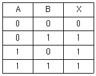
- 논리곱(AND동작)
- 논리합(OR동작)
- 부정논리합(NAND동작)
- 부정(NOT동작)
(정답률: 78%)
59. 다음 그림 중 루브리케이터의 기호는?
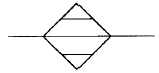
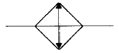
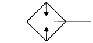
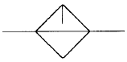
(정답률: 63%)
60. 유압장치에 부착된 압력 게이지가 40 bar을 나타내었다. 이 압력은 어떤 압력인가?
- 표준 대기압
- 절대 압력
- 게이지 압력
- 상세 압력
(정답률: 59%)
4과목: 메카트로닉스
61. 다품종 소량생산이 가능한 자동화를 의미하는 것은?
- 팩토리 오토메이션(factory automation)
- 플렉시블 오토메이션(flexible automation)
- 플로우 오토메이션(flow automation)
- 오피스 오토메이션(office automation)
(정답률: 52%)
62. 그림에서 공급압력 P1=600kPa이고 압력강하 △P=100kPa라면 유량은 몇 m3/h인가?
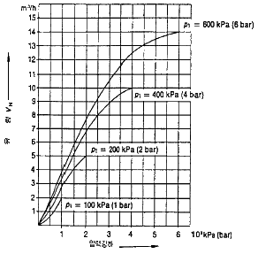
- 2
- 2.8
- 3.3
- 4
(정답률: 34%)
63. 프로그램 메모리 중 사용자가 자유롭게 프로그램을 쓰고 지울 수 있는 휘발성 메모리는?
- RAM
- ROM
- PROM
- EPROM
(정답률: 55%)
64. 직류전동기에서 운전중 브러시로부터 스파크가 일어나는 경우가 아닌 것은?
- 정류자의 브러시 접촉이 불량한 경우
- 전기자의 회로가 단선된 경우
- 전기자 리드선에 대한 결선이 잘못된 경우
- 축받이가 불량한 경우
(정답률: 47%)
65. 과도 응답값의 소멸되는 정도를 나타내는 양으로서 감쇠비를 어떻게 표시하는가?
- 제 2 오버슈트/최대 오버슈트
- 제 2 오버슈트/최종 오버슈트
- 최종 오버슈트/제 2 오버슈트
- 최대 오버슈트/제 2 오버슈트
(정답률: 42%)
66. 압력센서의 용도가 아닌 것은?
- 중량검출
- 토크검출
- 힘검출
- 성분검출
(정답률: 75%)
67. 다음 접점에 대한 설명중 옳지 않은 것은?
- 접점이란 회로가 연결되거나 떨어지는 동작을 행하는 곳을 말한다.
- 동작 상태에 따라 a접점, b접점, c접점으로 나눈다.
- a접점은 항상 닫혀 있다가 외부의 힘에 의하여 열리는 접점을 말한다.
- 접점부는 외부의 어떠한 힘도 작용하지 않는 상태로 나타낸다.
(정답률: 69%)
68. 센서의 신호처리시 문제점이 아닌 것은?
- 잡음
- 비선형성
- 시간 지연
- 수명 단축
(정답률: 73%)
69. 다음 그림과 같은 11핀 계전기에서 a접점으로 사용할 수 있는 단자는?
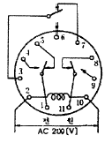
- 3번핀 - 7번핀
- 9번핀 - 11번핀
- 1번핀 - 5번핀
- 2번핀 - 10번핀
(정답률: 61%)
70. 2개의 입력을 가지면서 그들 입력의 상태에 따라 출력이 정해지며, 출력상태가 결정되면 입력이 없어도 출력이 그대로 유지되는 회로는?
- 카운터회로
- 타이머회로
- 인터럽트회로
- 플립플롭회로
(정답률: 66%)
71. 산업용 로봇(robot)의 일반적인 분류에서, 미리 설정된 순서와 조건 및 위치에 따라 동작을 순서적으로 진행하는 것은?
- 메뉴얼 로봇
- 시퀀스 로봇
- 플레이 백 로봇
- 지능 로봇
(정답률: 64%)
72. 다음 그림과 같은 논리도의 Y값을 최소화 정리할 때, 옳은 것은?
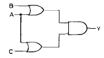
- Y = A + B + C
- Y = A + B · C
- Y = A · (B+C)
- Y = A · C(B+A)
(정답률: 33%)
73. 되먹임 제어계의 기능 중 "기준입력과 제어량의 차이"를 출력하는 요소는?
- 제어대상
- 동작신호
- 조작량
- 주 피드백의 량
(정답률: 22%)
74. 다음 그림과 같은 기호의 회로는?
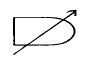
- 시동검출회로
- 시한동작회로
- 시한복귀회로
- 정지검출회로
(정답률: 35%)
75. 압전효과를 이용하여 사용되는 센서와 가장 거리가 먼 것은?
- 진동센서
- 가속도센서
- 초음파센서
- CdS셀
(정답률: 48%)
76. 다음 논리식 중 잘못된 것은?
- A ·
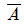
= 1 - A +
 = 1
= 1 - A · A = A
- A + A = A
(정답률: 61%)
77. 제어 시퀀스를 구성할 때 오동작을 예방하는 방법이 아닌것은?
- 신호의 지연을 방지하기 위해 배관을 가능한 길게한다.
- 가속력이 큰 경우에는 완충장치를 달아 작동력을 흡수토록 한다.
- 먼지와 이물질이 많은 경우에는 자체 정화 커버를 사용한다.
- 큰 부하나 횡방향의 부하를 받는 경우 적절한 마운팅 형태를 선택한다.
(정답률: 54%)
78. 4개의 입력요소 중 첫번째와 두번째 요소가 함께 작동되든지 세번째 요소가 작동되지 않은 상태에서 네번째 요소가 작동되었을 때 출력이 존재하는 제어기의 구성을 논리적으로 표현한 것은?
- Z = S1 + S2 +
 + S4
+ S4 - Z = (S1 + S2)· (
 + S4)
+ S4) - Z = S1 · S2 +
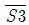
· S4 - Z = S1 · S2 ·
 + S4
+ S4
(정답률: 41%)
79. 다음의 제어대상과 제어방식의 관계 중 맞지 않는 것은?
- 서보기구-추종제어
- 자동전압조정 - 피드백제어
- 전동기시동 - 시퀀스제어
- 자동도어제어 - 비율제어
(정답률: 40%)
80. 유압 모터의 장점이 아닌 것은?
- 소형 경량으로 큰 힘을 낼 수 있다.
- 작동유의 점도 변화에 영향을 받지 않아 사용 온도 범위가 넓다.
- 2개의 배관만을 사용해도 되므로 내폭성이 우수하다.
- 속도나 방향 제어가 용이하며 릴리프 밸브를 달아 기구 손상 없이 급속 정지가 가능하다.
(정답률: 61%)